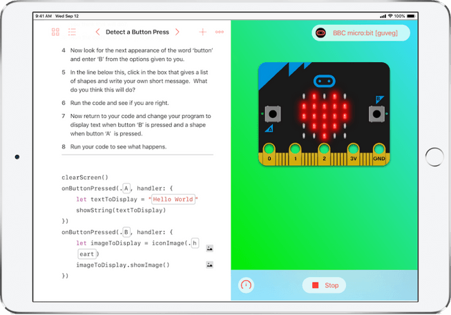

La programmation du Micro:bit peut se faire dans plusieurs langages, mais les deux plus populaires sont JavaScript Blocks Editor et MicroPython. Le JavaScript Blocks Editor vous permet de programmer avec des blocs de code visuels, parfaits pour les débutants, tandis que MicroPython vous permet d'écrire du code Python plus avancé pour des projets complexes. Une fois votre code écrit, vous pouvez simplement le télécharger sur votre Micro:bit via le lecteur USB.
